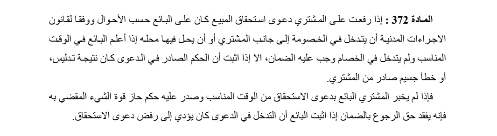
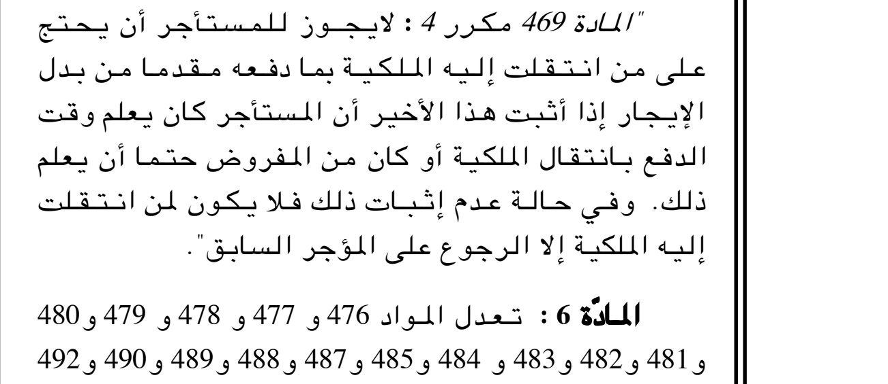
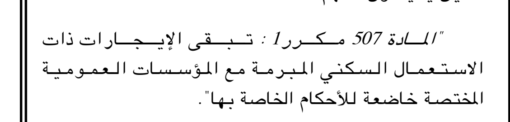
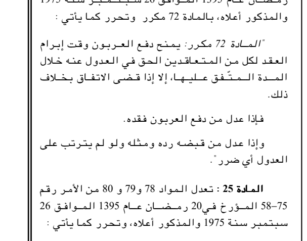
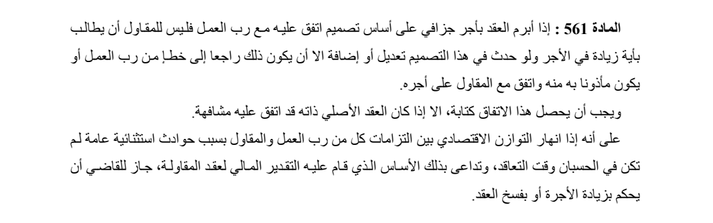
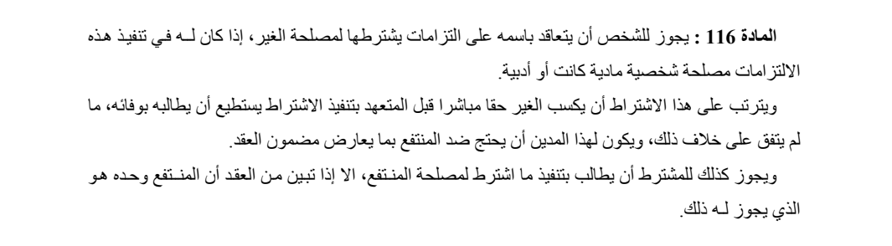
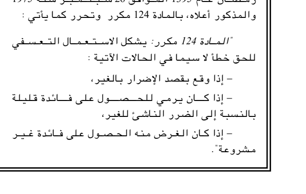
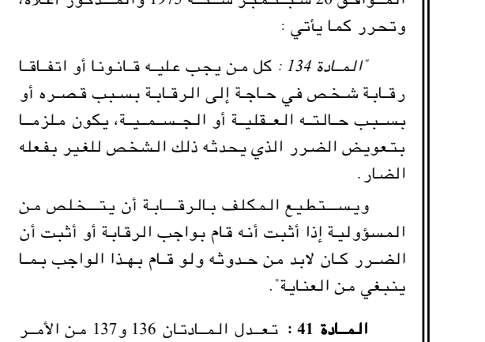
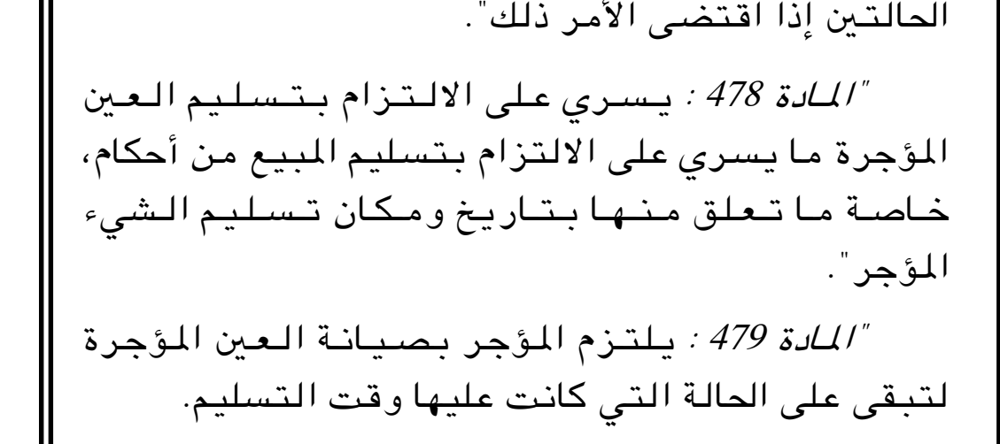
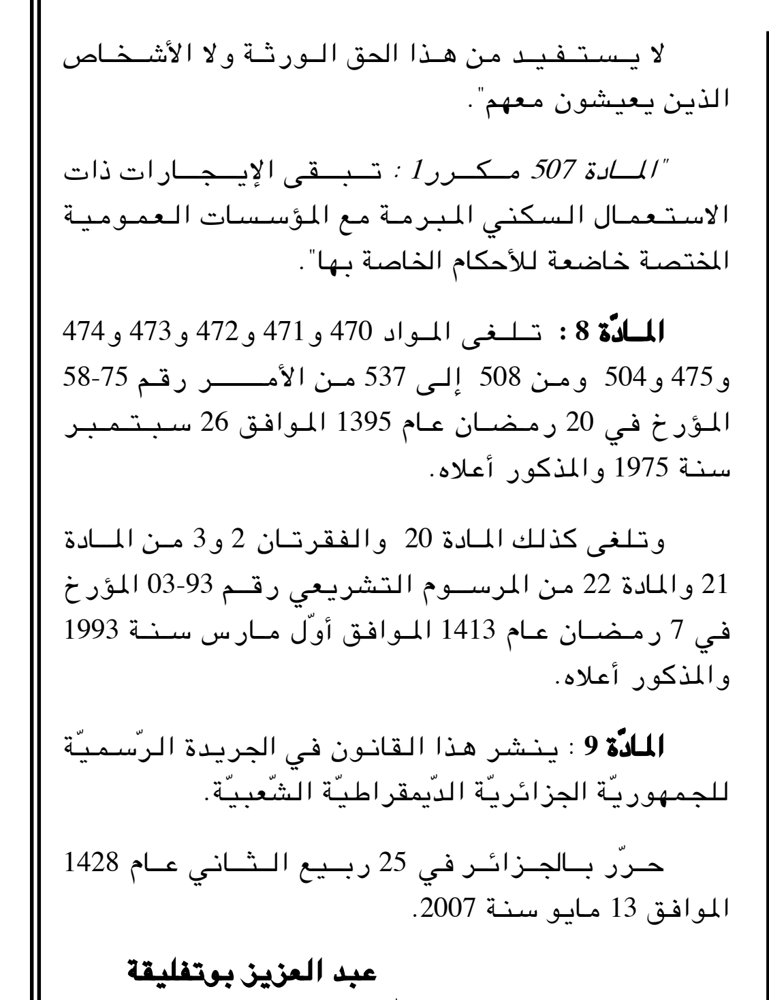

Article 472
A2007031 | Actually read the explicit472target in07-05art8. This is an empty current repeal marker, not a former body.

Current repeal marker; no former body is invented.
20 fixed random identities from the274-identity partial package, seed20261030. Actual AI image readings; not lawyer verification. 16 operative bodies and four explicit repeal targets. This sample is not a whole-Civil or historical-date certificate.
civil-consolidated-ar | Both Ministry paragraphs actually compared. The procedure citation, defence exception and lost-recourse condition remain intact.

إذا رفعت على المشتري دعوى استحقاق المبيع كان على البائع حسب الأحوال ووفقا لقانون الاجراءات المدنية أن يتدخل في الخصومة إلى جانب المشتري أو أن يحل فيها محله إذا أعلم البائع في الوقت المناسب ولم يتدخل في الخصام وجب عليه الضمان، الا إذا اثبت أن الحكم الصادر في الدعوى كان نتيجة تدليس، أو خطأ جسيم صادر من المشتري.
فإذا لم يخبر المشتري البائع بدعوى الاستحقاق من الوقت المناسب وصدر عليه حكم حاز قوة الشيء المقضي به فإنه يفقد حق الرجوع بالضمان إذا اثبت البائع أن التدخل في الدعوى كان يؤدي إلى رفض دعوى الاستحقاق.
A2007031 | Original07-05body read. Independent opening لا يجوز and later فلا يكون / إلا negatives are retained; no positive permission is inferred.

لا يجوز للمستأجر أن يحتج على من انتقلت إليه الملكية بما دفعه مقدما من بدل الإيجار إذا أثبت هذا الأخير أن المستأجر كان يعلم وقت الدفع بانتقال الملكية أو كان من المفروض حتما أن يعلم ذلك. وفي حالة عدم إثبات ذلك فلا يكون لمن انتقلت إليه الملكية إلا الرجوع على المؤجر السابق.
A2007031 | Original07-05single paragraph matches; public-institution housing exception is not generalized to all leases.

تبقى الإيجارات ذات الاستعمال السكني المبرمة مع المؤسسات العمومية المختصة خاضعة للأحكام الخاصة بها.
A2005044 | Original05-10three paragraphs match, including the restored فقده and the double-return provision.

يمنح دفع العربون وقت إبرام العقد لكل من المتعاقدين الحق في العدول عنه خلال المدة المتفق عليها، إلا إذا قضى الاتفاق بخلاف ذلك.
فإذا عدل من دفع العربون فقده.
وإذا عدل من قبضه رده ومثله ولو لم يترتب على العدول أي ضرر.
civil-consolidated-ar | All three Ministry paragraphs read. Keep printed خطإ, the writing exception, and exceptional-economic-event relief exactly as in this witness.

إذا أبرم العقد بأجر جزافي على أساس تصميم اتفق عليه مع رب العمل فليس للمقاول أن يطالب بأية زيادة في الأجر ولو حدث في هذا التصميم تعديل أو إضافة الا أن يكون ذلك راجعا إلى خطإ من رب العمل أو يكون مأذونا به منه واتفق مع المقاول على أجره.
ويجب أن يحصل هذا الاتفاق كتابة، الا إذا كان العقد الأصلي ذاته قد اتفق عليه مشافهة.
على أنه إذا انهار التوازن الاقتصادي بين التزامات كل من رب العمل والمقاول بسبب حوادث استثنائية عامة لم تكن في الحسبان وقت التعاقد، وتداعى بذلك الأساس الذي قام عليه التقدير المالي لعقد المقاولة، جاز للقاضي أن يحكم بزيادة الأجرة أو بفسخ العقد.
civil-consolidated-ar | One Ministry paragraph matches, including the exception for the time required for delivery.
إذا لم يعين الاتفاق أو العرف مكانا أو زمانا لتسلم المبيع وجب على المشتري أن يتسلمه في المكان الذي يوجد فيه المبيع وقت البيع وان يتسلمه دون تأخير باستثناء الوقت الذي تتطلبه عملية التسلم.
civil-consolidated-ar | Both Ministry paragraphs match; ratification and subsequent ownership are distinct printed grounds.
إذا أقر المالك البيع سرى مفعوله عليه وصار ناجزا في حق المشتري.
وكذلك يعتبر البيع صحيحا في حق المشتري إذا أكتسب البائع ملكية المبيع بعد انعقاد البيع.
civil-consolidated-ar | All three Ministry paragraphs match, including the final beneficiary-only exception.

يجوز للشخص أن يتعاقد باسمه على التزامات يشترطها لمصلحة الغير، إذا كان له في تنفيذ هذه الالتزامات مصلحة شخصية مادية كانت أو أدبية.
ويترتب على هذا الاشتراط أن يكسب الغير حقا مباشرا قبل المتعهد بتنفيذ الاشتراط يستطيع أن يطالبه بوفائه، ما لم يتفق على خلاف ذلك، ويكون لهذا المدين أن يحتج ضد المنتفع بما يعارض مضمون العقد.
ويجوز كذلك للمشترط أن يطالب بتنفيذ ما اشترط لمصلحة المنتفع، الا إذا تبين من العقد أن المنتفع وحده هو الذي يجوز له ذلك.
A2007031 | Actually read the explicit472target in07-05art8. This is an empty current repeal marker, not a former body.
Current repeal marker; no former body is invented.
civil-consolidated-ar | One Ministry paragraph matches; inheritance debts and the contrary-agreement exception remain intact.
يرد المشتري للبائع وقت انعقاد البيع ما قد وفاه هذا الأخير من ديون التركة ويحسب للبائع كل ما يكون دائنا به للتركة ما لم يوجد اتفاق يقضي بخلاف ذلك.
A2007031 | Actually read the closed508-to537repeal range in07-05art8;508is its lower endpoint.

Current repeal marker; no former body is invented.
A2005044 | Original05-10opening and all three dashed grounds match; separate لا سيما, restored الإضرار, colon and final stop retained.

يشكل الاستعمال التعسفي للحق خطأ لا سيما في الحالات الآتية :
- إذا وقع بقصد الإضرار بالغير،
- إذا كان يرمي للحصول على فائدة قليلة بالنسبة إلى الضرر الناشئ للغير،
- إذا كان الغرض منه الحصول على فائدة غير مشروعة.
civil-consolidated-ar | One Ministry paragraph matches, including the external-cause examples and contrary-law/agreement condition.
إذا أثبت الشخص أن الضرر قد نشأ عن سبب لا يد له فيه كحادث مفاجئ، أو قوة قاهرة، أو خطأ صدر من المضرور أو خطأ من الغير، كان غير ملزم بتعويض هذا الضرر، ما لم يوجد نص قانوني أو اتفاق يخالف ذلك.
A2005044 | Both original05-10paragraphs match, including both alternative defences and the visible stops.

كل من يجب عليه قانونا أو اتفاقا رقابة شخص في حاجة إلى الرقابة بسبب قصره أو بسبب حالته العقلية أو الجسمية، يكون ملزما بتعويض الضرر الذي يحدثه ذلك الشخص للغير بفعله الضار.
ويستطيع المكلف بالرقابة أن يتخلص من المسؤولية إذا أثبت أنه قام بواجب الرقابة أو أثبت أن الضرر كان لابد من حدوثه ولو قام بهذا الواجب بما ينبغي من العناية.
civil-consolidated-ar | Ministry body matches. The following bold2bis-cause heading is visible but excluded from the article body.
إذا كان محل الالتزام نقودا، التزم المدين بقدر عددها المذكور في العقد دون أن يكون لارتفاع قيمة هذه النقود أو لانخفاضها وقت الوفاء أي تأثير.
civil-consolidated-ar | The entire short Ministry paragraph matches; both the independent لا and exception إلا remain intact.
لا يعتبر القبول الذي يغير الايجاب إلا ايجابا جديدا.
civil-consolidated-ar | One Ministry paragraph matches; the two transfer-formality conditions are not collapsed.
إذا بيعت تركة فلا يسري البيع في حق الغير الا إذا قام المشتري بالاجراءات الواجبة لنقل كل حق اشتملت عليه التركة فإذا نص القانون على اجراءات لنقل الحقوق المذكورة بين المتعاقدين وجب أيضا أن تتم هذه الاجراءات.
A2007031 | Original07-05single paragraph matches, including the cross-application of delivery rules.

يسري على الالتزام بتسليم العين المؤجرة ما يسري على الالتزام بتسليم المبيع من أحكام، خاصة ما تعلق منها بتاريخ ومكان تسليم الشيء المؤجر.
A2007031 | Actually read the closed508-to537repeal range in07-05art8;522falls inside it. No invented former text.

Current repeal marker; no former body is invented.
A2007031 | Actually read the closed508-to537repeal range in07-05art8;510falls inside it. No invented former text.

Current repeal marker; no former body is invented.